Project Note
概要
Arduinoというマイコンボードを使い、自由制作の課題が提示された。 条件はArduinoを使うこと、そしてIoTを活用すること。 グループで話し合った結果、私たちはエアガンでの射撃とダーツを組み合わせたゲームを作ることにした。 また、IoTを活用するために、QRコードを読み取ると点数の確認ができる仕組みを作るという方向性で一致した。 イメージスケッチは以下の通りである。
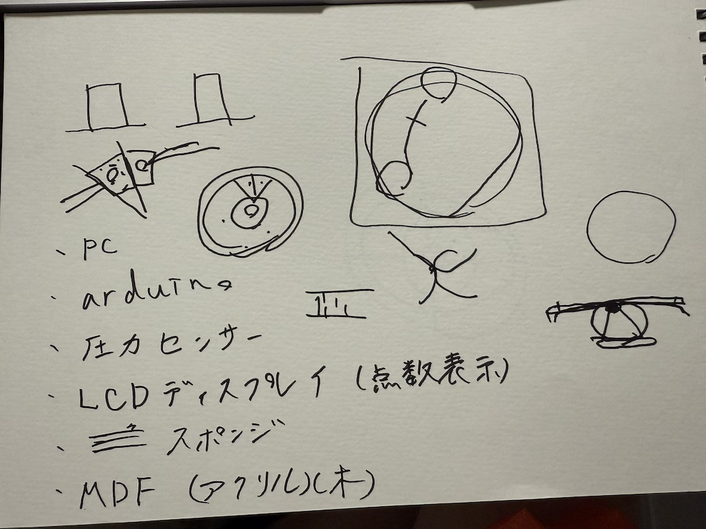
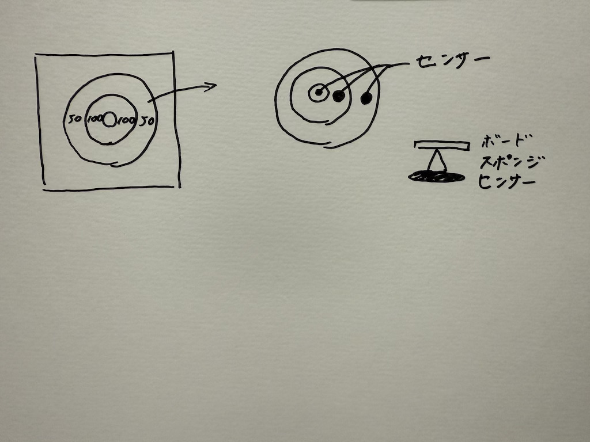
衝撃の感知方法について
本物のダーツがどのような仕組みで感知しているのか調べてみたところ、難しい計算式を用いて計算しているということがわかった。 これでは難しくて再現が不可能なので、簡略化した感知方法を考えてみることにした。 その結果思いついた案が以下の通りである。
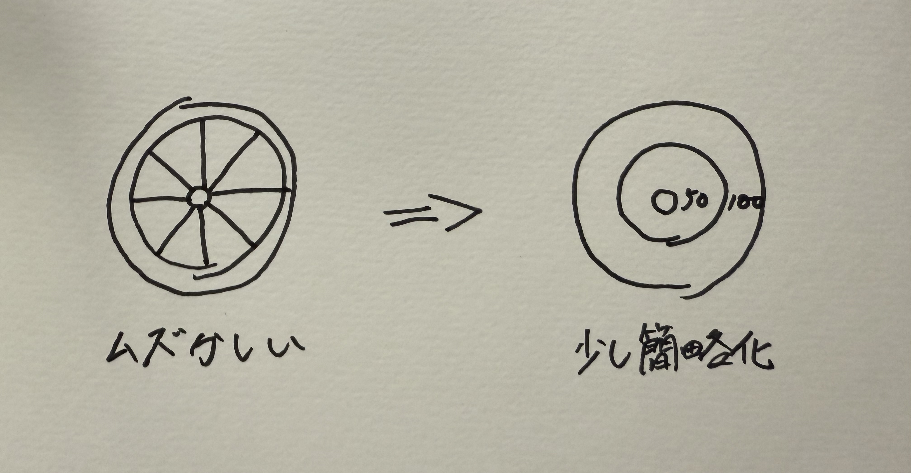
オレンジの断面のように得点を区切り過ぎてしまうとセンサーでの感知が難しくなってしまう。 そこで、縦線での区切りをなくし、円形で得点を区切ることにした。 今回は圧力センサーというものを使って制作していく。
接続
圧力センサー1つをarduinoと接続してみることにした。正しい繋ぎ方を見つけるのにはかなり苦戦したが 最終的に以下の通りに落ち着いた。また、ソースコードは画像右の通りでシリアルモニターに数値が送られるようになった。 左の電子機器がarduino、おたまじゃくしのようなものが圧力センサー、その下の黄色いものが配線を分岐させるブレッドボードである。
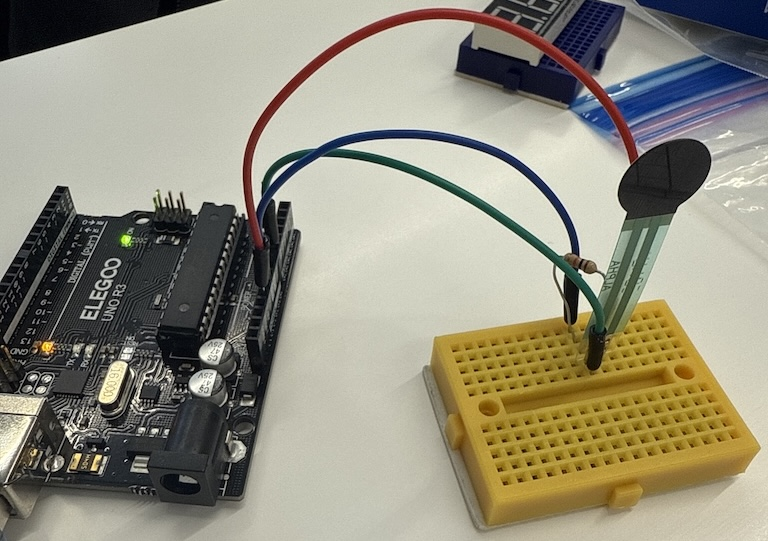

QRコード生成
シリアルモニターの数値からQRコードを生成する方法を探る。
コードが生成されるまでのプロセスは、
センサーが感知する→arduinoが数値化→スコア化してPythonに送信→PythonがQRコード作成である。
この一連の流れを行うソースコードをChatGPTの力も借りて生成した。以下の通りである。

なお、シリアルポートの特定には以前の講義で使用したserial_serch.pyを使用した。 スコアをまだ割り振っていないため、適当な数値が出ているがしっかりとpythonが動き、finder上に QRコードが生成された。


5000円の損失
arduinoとセンサーの接続、そしてQRコードの作成までの一連の流れはうまくいった。
しかし、圧力センサーをブレッドボードに直で刺すと短すぎてダーツボードに取り付けができない。
これは把握済みであったため当初は配線を半田付けして延長しようと考えていた。
しかし、いざ半田付けをしてみるとセンサーの足が溶けてしまい、不可能であった。
いくつかセンサーが犠牲になってしまった。本来の予定では、センサーを12個使用する予定であったが、
予備も含めて15個注文した。
しかし、注文した次の日にピエゾ素子というものを見つけた。これは圧力センサーよりも安価で感度も期待できる。
さらに、配線が半田付けされているため自分たちで犠牲を出す心配もない。
圧力センサーの注文をキャンセルしようとしたが、すでに発送の準備がされていた。不要なセンサーが発送され、5000円の損失が起きてしまった。
圧力センサー作戦は中止し、ピエゾ素子を15個使う方向へとシフトをした。
（画像右：足が溶けたセンサー 左：ピエゾ素子）
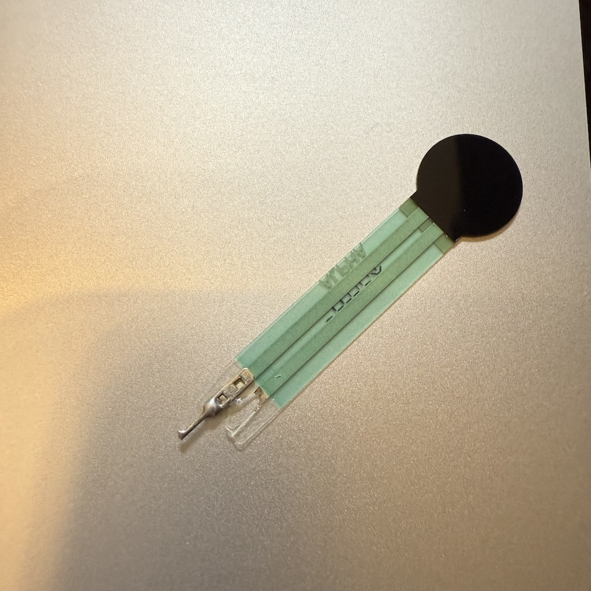
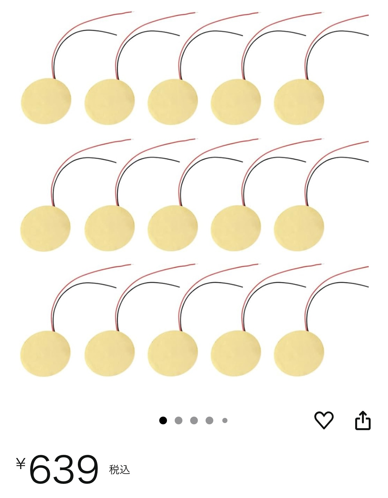
接続
ここで問題となるのが、arduinoに接続できるピエゾは6つまでであるということである。自分たちは15個のピエゾを接続したい。
考えられる方法は以下の通り。
・ブレッドボードを3個使い、それぞれをジャンパ線で繋ぐ。
結果）配線がごちゃごちゃになり、なぜかうまくいかない。
・マルチプレクサを使う。
結果）配線方法が難しい。
・大きいブレッドボードを使う。
結果）これに落ち着いた。最終的に使うピエゾは10個になった。
arduinoのA0-A5端子までを使い、それぞれをブレッドボードで分岐させた。
アナログ端子1つに対してピエゾを2つ繋ぐようにした。同じ点数を感知するピエゾが2つ存在するということである。
arduinoとピエゾを接続
まずブレッドボード一つで収まる数のピエゾを接続してみた。 ピエゾに極性はなく、回路に1mΩの抵抗を並列に挟む必要がある。 図に表すと左の通りで、4個接続すると右の通り。
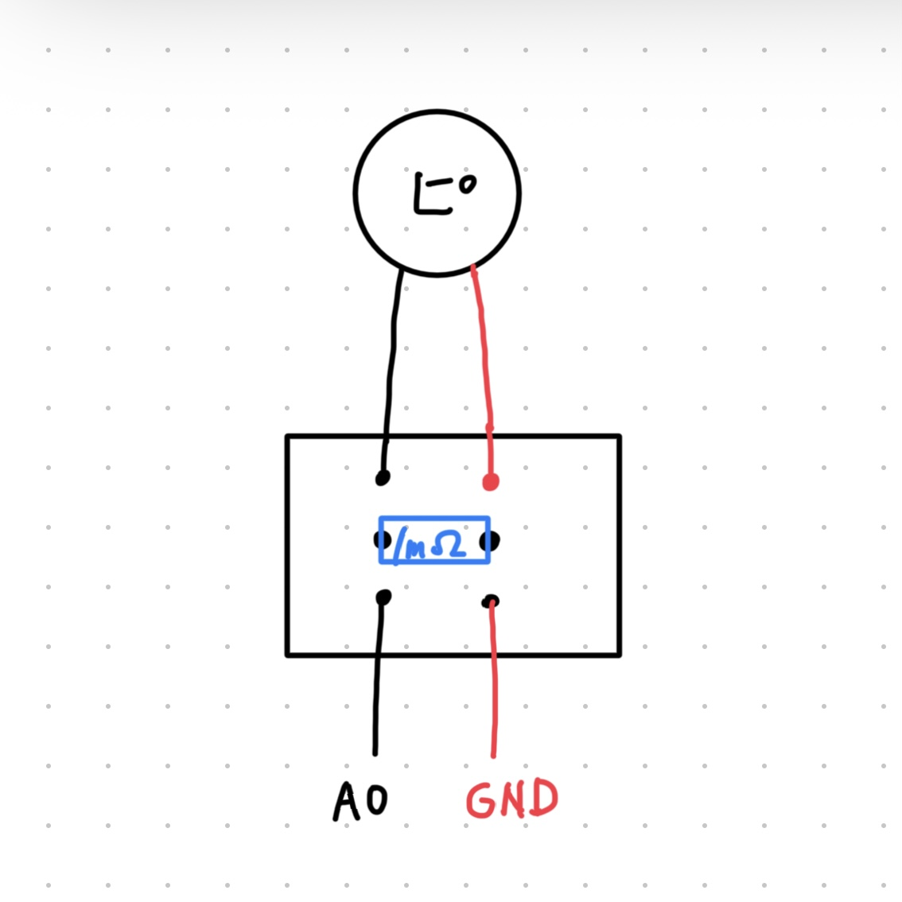
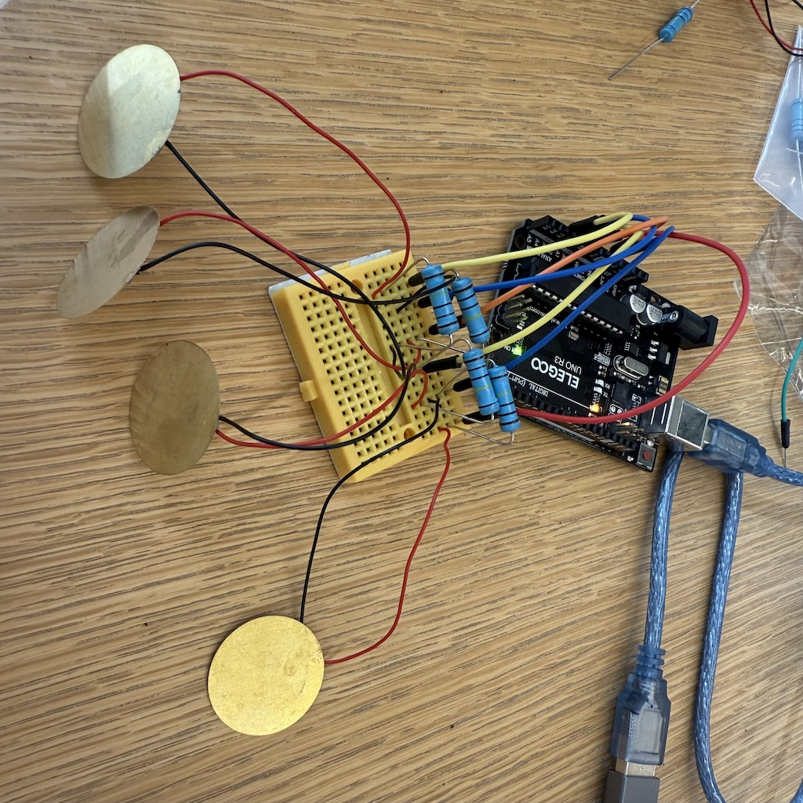
しかし、これでは配線が短すぎてダーツボードに取り付けられないため半田付けをして延長することにした。 また、配線の先端が線のままだとブレッドボードに刺しにくいため、ピンを半田付けした。
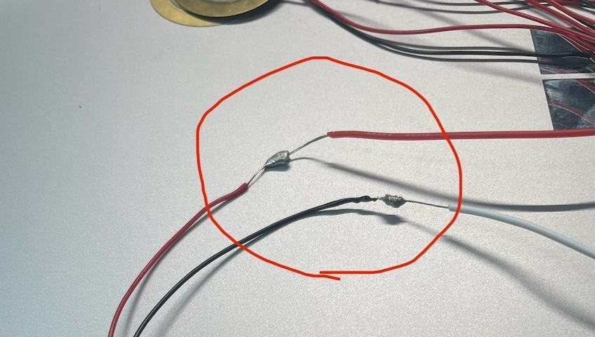
配線の延長に成功したところで、新たに購入した大きいブレッドボードを2個使って ピエゾを15個接続、そして事前に準備しておいたMDFのダーツボードに仮止めして動作確認を行なった。
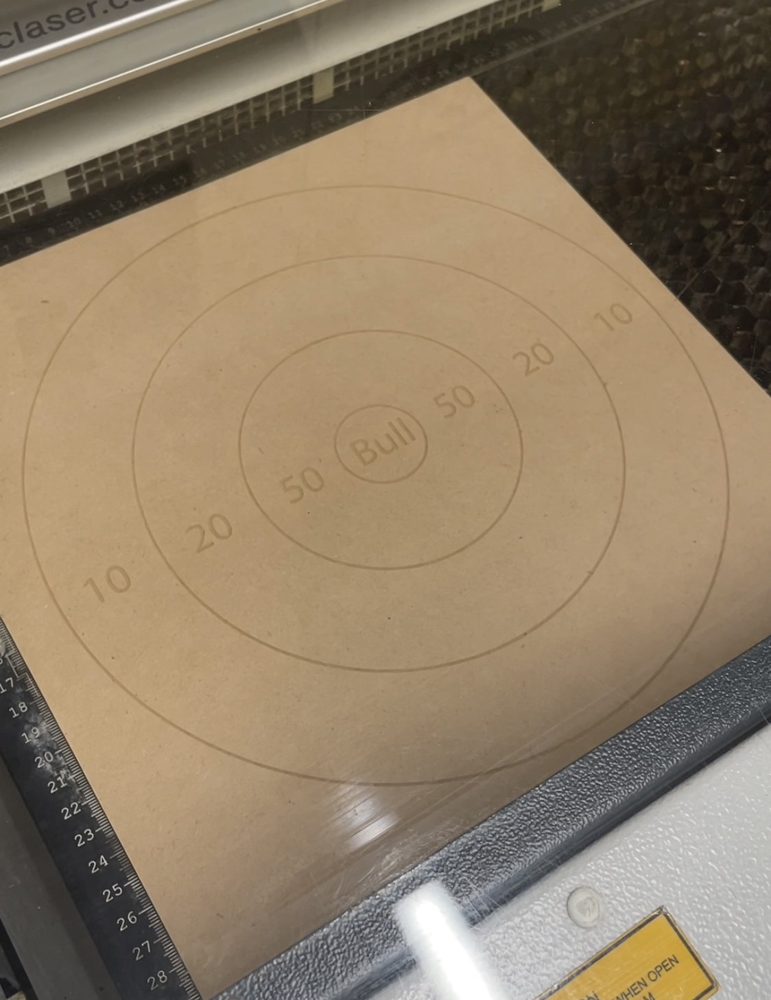
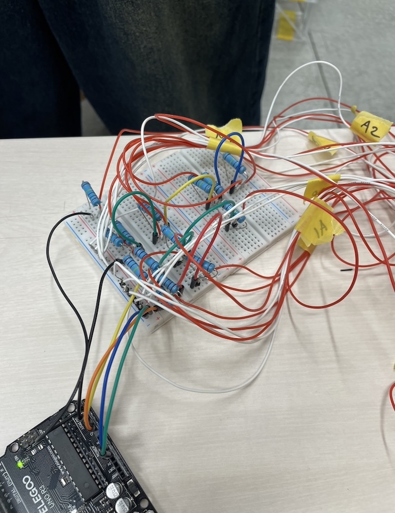
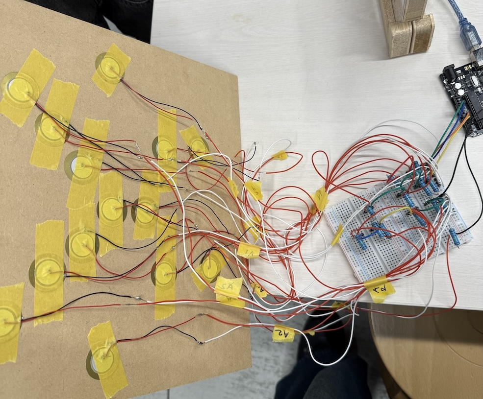
ソースコード
Python

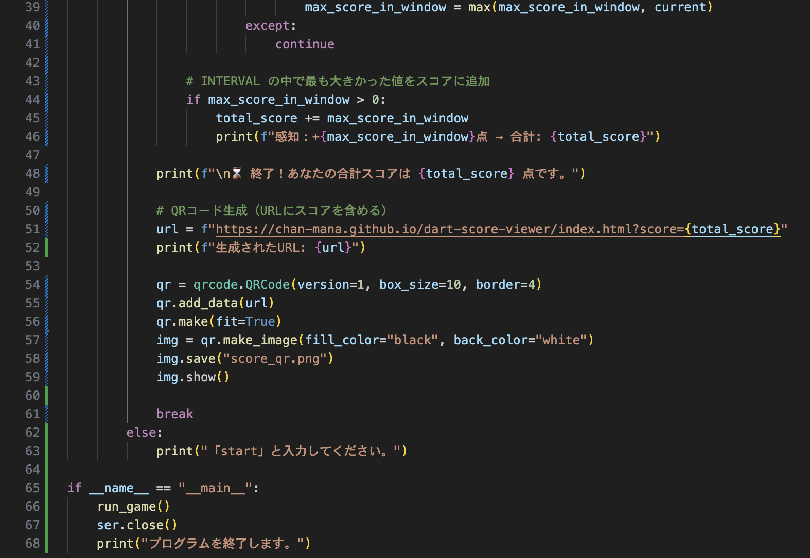
arduino
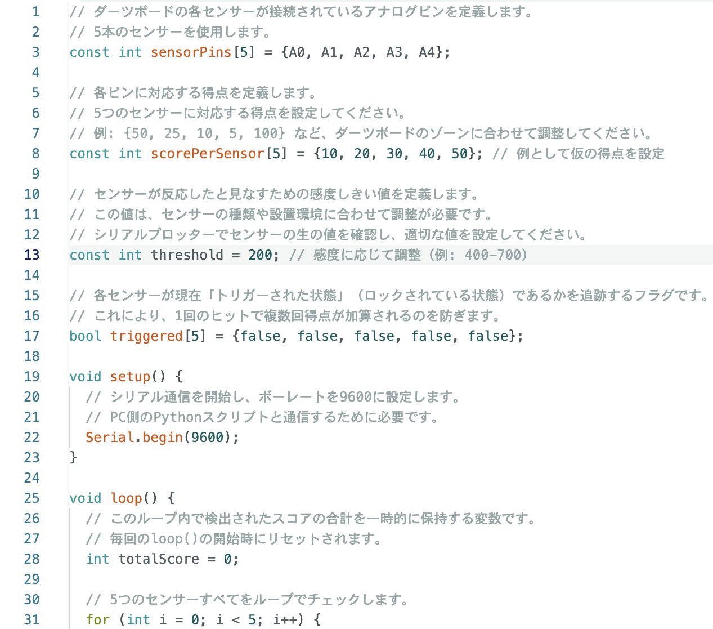
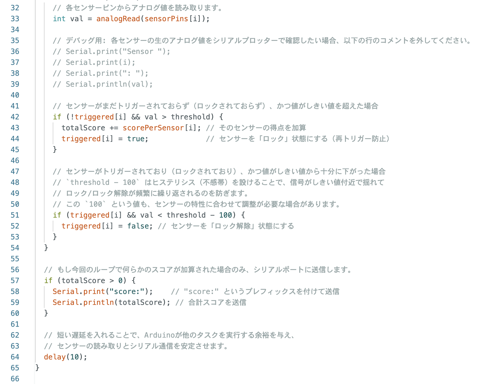
一連の流れ
Pythonを動かし、ターミナルに"start"と入力する
↓
60秒間のカウントがスタートされ、その間のみピエゾの値を感知、
それぞれ割り当てられた固定の点数を合計していく
↓
60秒後、合計点数を表示するためのサイトに飛ぶQRコードが生成され、画面に表示される
↓
QRコードをスマホで読み取ると点数の確認ができる
合計点数を表示するためのサイトは、Githubにて新しいリポジトリを作成した。
テスト表示用ページ
動作確認と変更
動作確認の結果はほぼ失敗であった。問題点としては、一つの大きいボードにピエゾを全て貼り付けているため 全てのセンサーが共振してしまい、ピエゾ側が当たり判定を区別できない点である。 これにより、PCに送られてくる値は暴走し、一回のヒットでズラーーっと値が送られてきてしまった。 簡単にいうと、一回のヒットで全てのピエゾが反応していることになる。